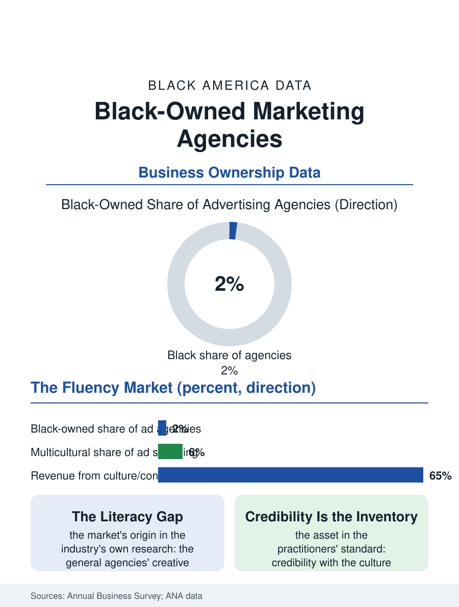

Black Business
The Culture's Fluency, For Sale: Black-Owned Marketing Agencies
The Black agency sells the fluency the general market lacks, from a sliver of the budgets, with the culture's verdict as its balance sheet. The agency file.

The Black-owned marketing agency sells the culture's fluency to the brands that need it: the insight into Black consumers that the general agencies chronically miss, packaged as creative, media, and strategy from firms whose founders left the big agencies' ceilings. The business census counts them in the hundreds of employer firms, small against the holding companies, commanding a share of the multicultural marketing budgets. This article reads the agency file.
The Multicultural Budget
The agency's market exists because of the general market's failure, documented in the industry's own research: the advertising establishment's creative departments and leadership remain overwhelmingly non-Black a century into selling to Black consumers, and the misfires, the campaigns withdrawn after the community's reading of them went public, recur on a schedule the trade press covers as weather. The Black agency's founding pitch is the correction of that failure from inside the culture: the creative that does not need the room explained, the media plan that knows which outlets the community actually trusts, the research that asks the questions the general surveys miss. The Association of National Advertisers' data give the market its scale and its scandal in the same figures: multicultural marketing receives a small share of total advertising spending relative to the populations' share of consumers and of growth, and the Black-owned share of even that allocation is a fraction, the supplier diversity commitments of the brand era notwithstanding. The firm's clients therefore concentrate in the categories that cannot afford the general market's illiteracy, beauty and grooming, entertainment, food and beverage, the public sector's outreach campaigns, and the financial services firms' belated courtship of the wealth file's households.
Holding Companies and the Talent War
The industry's structure squeezes the independent agency between the holding companies' scale and the platforms' disintermediation: the media buying that once funded the creative departments has migrated to the platforms' self-serve systems, and the creative itself is repriced by the content economy, the influencer and the creator doing in a post what the agency's campaign did in a quarter. The Black agency's adaptation is visible in the trade data: the firms reposition as culture consultancies and content studios, their staffs drawn from the same creator economy they now direct, their deliverable the always-on cultural presence rather than the seasonal campaign. The talent war cuts in their favor for once: the young Black creative, courted by every agency's diversity initiative, chooses the Black-owned shop at rates its pay scales should not predict, buying mentorship and authorship over the holding company's salary ladder, so that the independent firm's creative reputation in the award data outruns its revenue rank. The acquisition file completes the industry's circle: the holding companies periodically buy the successful Black agency, the founder's exit being the industry's standard terminus, after which the acquired shop's distinctness dilutes on the acquirer's schedule, and the next founding generation starts the cycle again, a rhythm the file records without illusion.
Selling the Culture Without Selling It Out
The agency file closes on its profession's built-in tension, which its practitioners articulate more honestly than any other trade in the business section: the firm monetizes the culture's fluency for clients whose commitment to the community is exactly as deep as the campaign's quarter, and the agency's own credibility, its actual asset, depends on refusing the work that would spend it. The celebrated shops' public record includes the declined accounts and the corrected campaigns, the moments the firm spent its client's money protecting the client from the community's verdict, which is the service at its most valuable and least billable. The forward file is the budget's: the demographic arithmetic of the consumer market, the multicultural majority of the young cohorts, makes the agency's fluency the industry's future core competence rather than its specialty niche, and the firms positioned for that future are those building the general capability inside the cultural one, the reverse of the industry's historical direction. The census counts the agencies in the hundreds, their receipts a sliver of the advertising whole. Their influence in the culture's mirror, the images of Black life that the commercial system projects back at it, is out of all proportion to the sliver, because the mirror is their product, and the file's last word is the practitioners' own standard: the work is judged, finally, at the cookout, by the audience it claims to know, and no media plan survives failing there.
More in Black Business
Black-Owned Businesses: Counts, Receipts, and the Representation Gap
About 161,000 Black-owned employer firms and three million solo ventures: how the Census Bureau counts Black business ownership, where firms concentrate, and the gap between population share and business share.
Black Median Net Worth: The Wealth Gap in Federal Reserve Data
The Federal Reserve puts Black median family net worth at $44,900, against $285,000 for White families — about 16 cents on the dollar. The widest gap in economic data.
Black Buying Power: The $1.8 Trillion Consumer Economy
Black buying power is estimated at about $1.8 trillion — larger than the economy of most nations. What the figure measures, who produces it, and what it buys.
Source: U.S. Census Bureau, Annual Business Survey for advertising agencies; Association of National Advertisers multicultural marketing data.